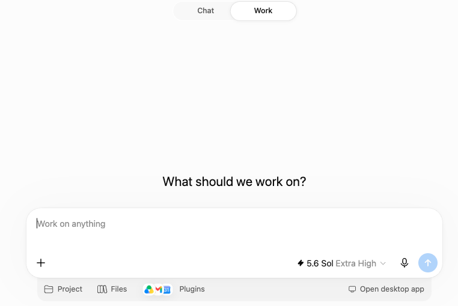
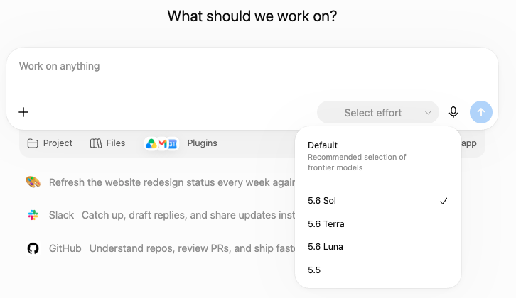
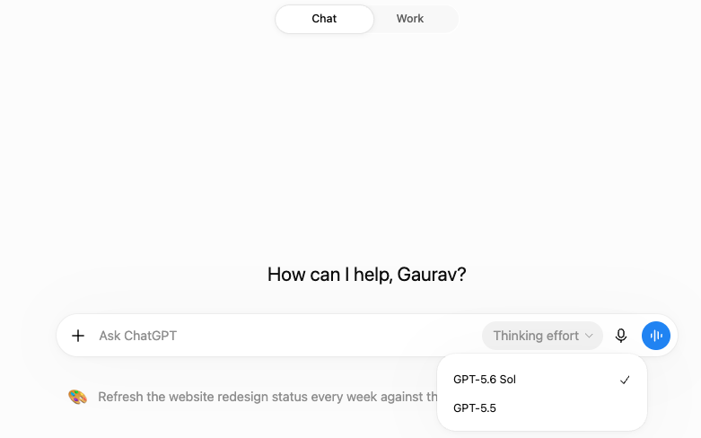
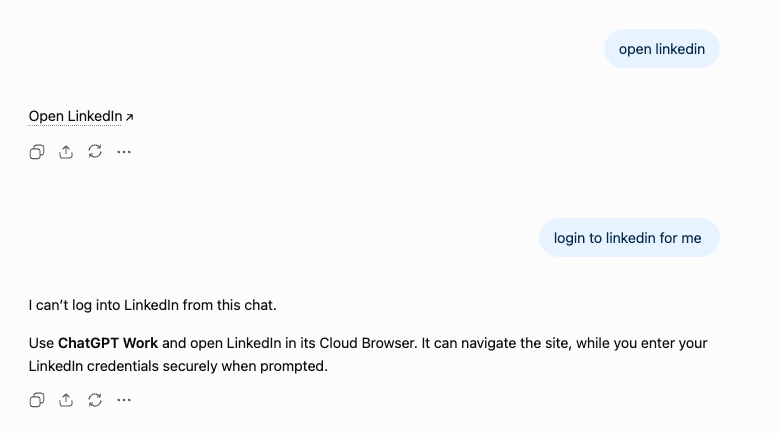

🌐
Work through websites
Work can open pages, click, move through a site and collect information across multiple pages.
Chat can already research, analyse files and create content. Use Work when ChatGPT needs a fuller working environment to complete the task.
These are the practical differences that matter to most users.
Work can open pages, click, move through a site and collect information across multiple pages.
Files created in Work can stay available for later Work sessions instead of starting from a fresh working area.
Work can create, test and publish a working ChatGPT Site.
Local Work can use approved files, folders and programs on your computer.
Work offers a different model picker, including Sol, Terra and Luna with more reasoning levels.
Use the tabs to compare the Work screen, the model picker and one example of when Chat tells you to move to Work.

The screen is built around a larger piece of work, not only a single back-and-forth chat.

Depending on your plan, Work can expose Sol, Terra and Luna, along with more effort choices.

Normal Chat is still powerful, but it presents fewer controls up front and is designed to feel lighter.

Here, the task needs website interaction. Chat cannot log into LinkedIn from a normal chat, so it points you to Work and its browser.
| What needs to happen? | Chat | Work |
|---|---|---|
| Research, analyse files, write or create a deliverable | Start here | Usually unnecessary |
| Move through websites, click or collect information across pages | Limited | Use Work |
| Reuse files created during earlier Work sessions | Fresh working area | Use Work |
| Build and publish a working ChatGPT Site | Can help create it | Use Work |
| Work directly with files or programs on your computer | No direct local access | Use Local Work |
“Compare these five competitors and summarise their positioning.”
“Go through these 40 competitor websites, collect their pricing and product information, organise it and create a report.”
“Analyse this Excel file and explain why sales dropped.”
“Collect additional data from these websites, combine it with my files and create the final analysis.”
“Help me plan and write a website.”
“Build the website, test it and publish it as a Site.”
Tell Work what you want finished, what it should use, what it must keep unchanged and what you want back.
Cloud Work is ideal for uploaded files, connected apps and web sources. Local Work is for tasks that need files or applications on your computer.
Work may ask for clarification, permission or confirmation before an important action.
Use a connected app when it can complete the action; browser interaction is a fallback for public web pages.
Check irreversible, financial, legal or business actions before approving them.
Give Work the outcome, material, boundaries and review criteria. Then check the result rather than assuming every intermediate decision was right.
The best route depends on whether the material is uploaded, connected through an App or stored locally on your computer.
A reference file guides one task. A reusable template combines an example with standing instructions so the same type of output can be produced repeatedly.
Where supported, Work can search or act through connected services and may create native Google Docs, Sheets or Slides. The App and workspace permissions still define what is available.
Public browser interaction is useful when no App can complete the task directly, but websites may block automated access. Cloud browser also cannot complete every sign-in or payment flow.